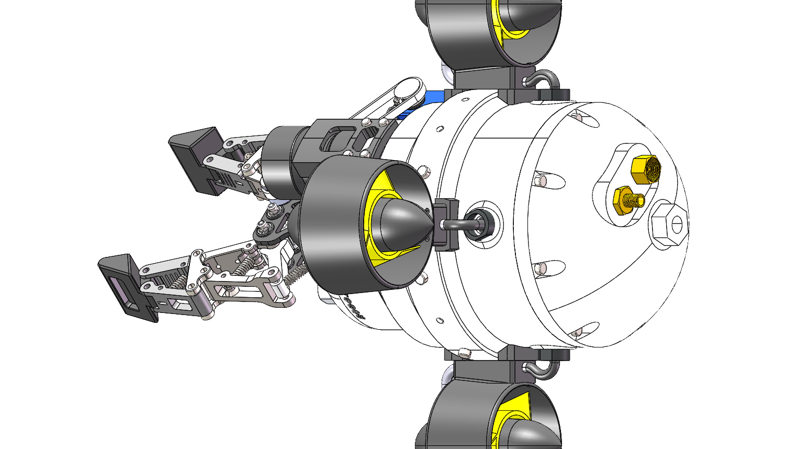
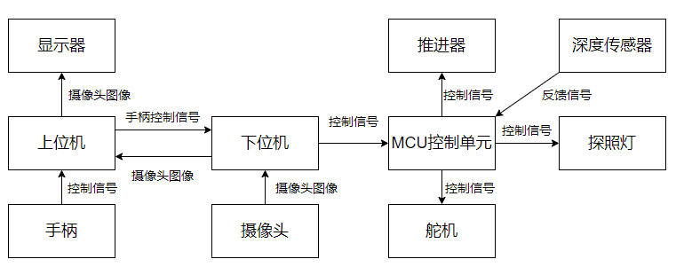
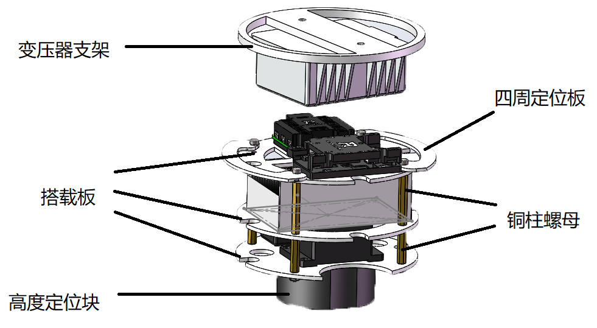
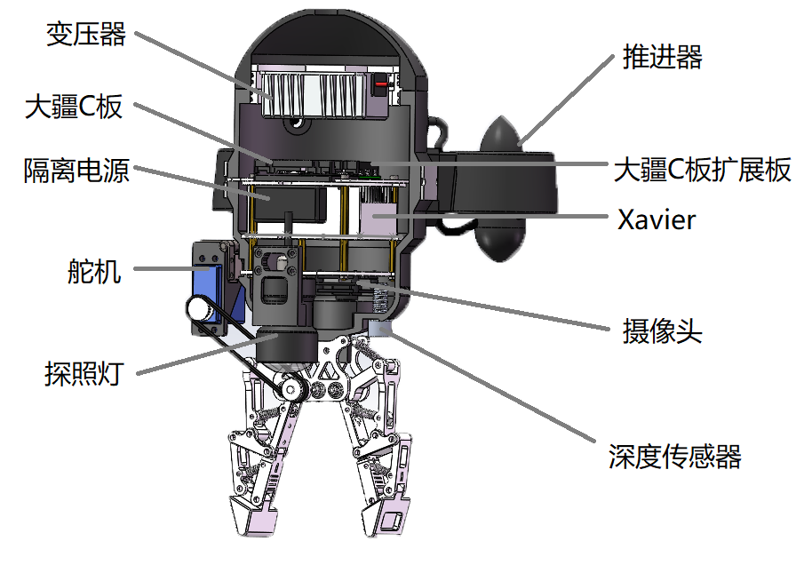
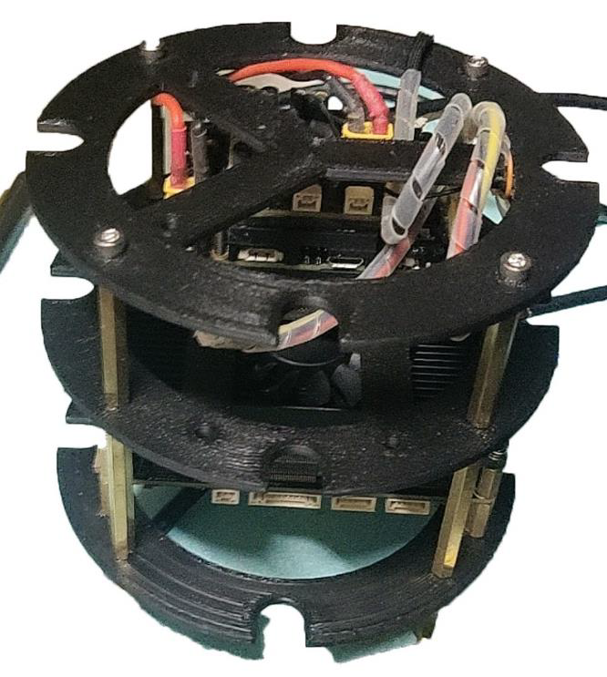

Underwater Robot
Electrical integration and STM32 control development for an underwater robot, with remote-controlled movement and gripper operation tested in water.

- Period
- Jun – Aug 2024
- My role
- Electrical & control engineering team member
- Validation
- In-water movement & gripper tests
The project
A team-built underwater robot with embedded motion and gripper control. My work focused on the electrical interfaces, hardware integration and further development of STM32 software based on an existing control framework.
My contribution
- Took responsibility for electrical and control engineering within the team, including electrical interfacing and hardware integration.
- Extended the existing STM32 control software to support robot movement and gripper operation.
- Participated in in-water testing to validate remote-controlled movement and the gripper.
Engineering approach
Organize the electronics
Define the component layout and electrical interfaces within the robot enclosure, accounting for installation space and accessibility.
Integrate hardware and control
Connect the embedded controller with the motion actuators and gripper, building on the project’s existing control framework.
Develop actuator behavior
Extend STM32 software for the movement and gripper functions needed during remote operation.
Test in water
Check commanded movement and gripper operation on the physical robot under in-water test conditions.
Results & validation
The robot demonstrated remote-controlled movement and gripper operation during in-water tests. The electrical models, installation layout and architecture drawing document the hardware and control context behind that work.
The architecture diagram provides the wider team context. This case study focuses on electrical integration and the STM32 movement and gripper functions verified during in-water testing.
Project gallery
Original project figures. Select an image to view it at full size.




Source & tools
Explore the project files, technical documentation and supporting materials.